Loading Map...
Welcome to the Leagues Starting Tasks App!
Hotkeys
If using the browser version, you have to focus on the tab to use hotkeys.
Control + Space: Mark the current task as done.
Shift + Space: Undo the last task.
Text Colors
Instructions: Recommended actions that will help later on.
Task: Your current league task.
Task Notes: Extra information about the current task.
Got it!
Completed Tasks:
0
|
Total Points:
0
Undo
Mark as Done